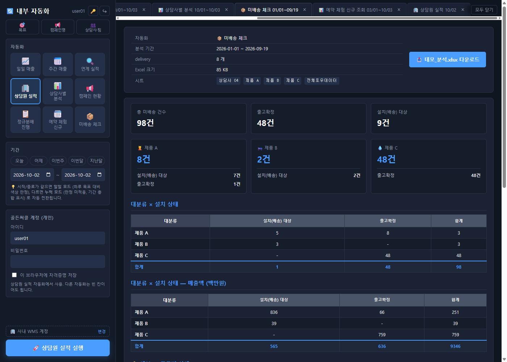
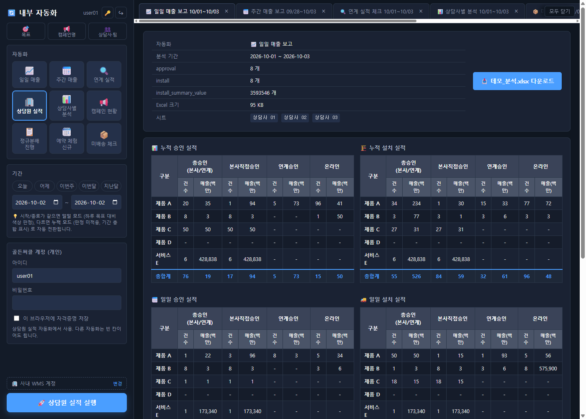
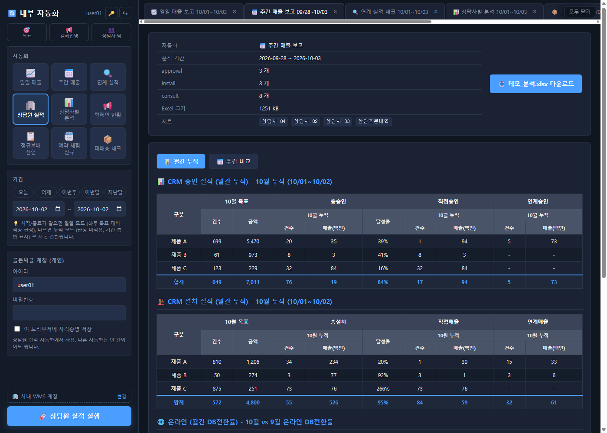
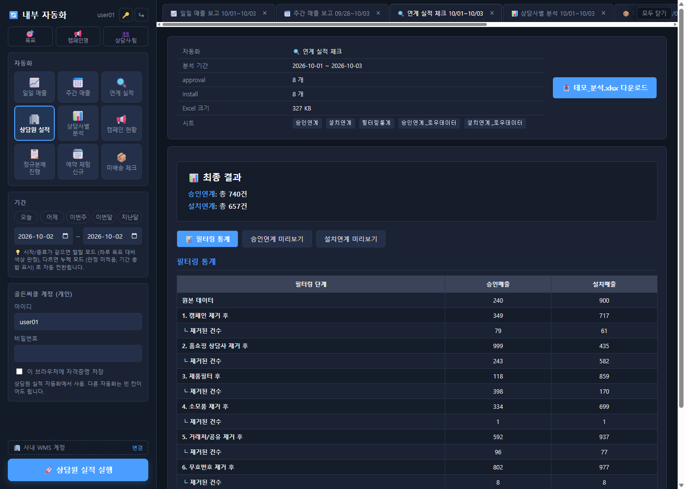
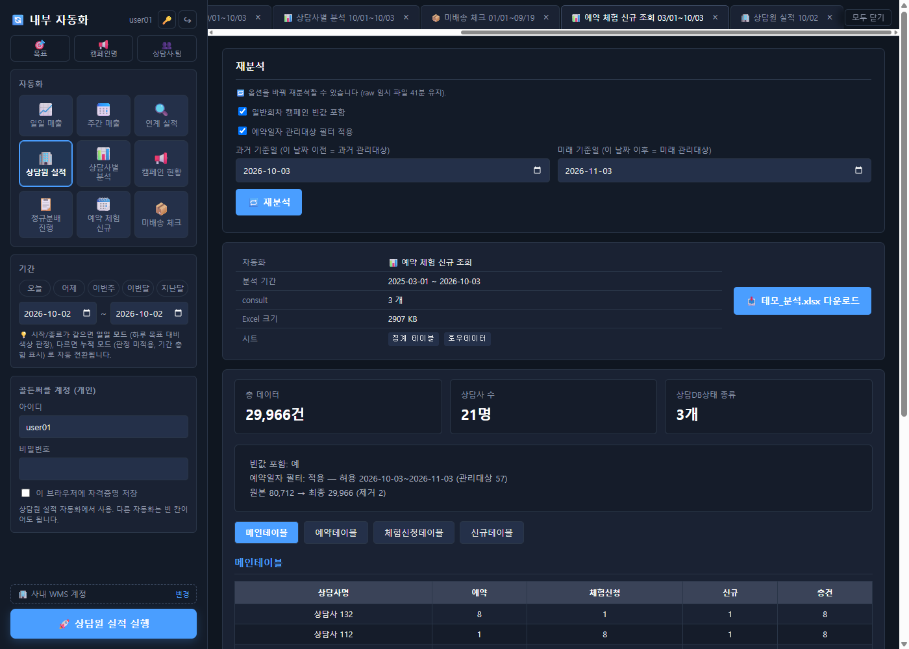
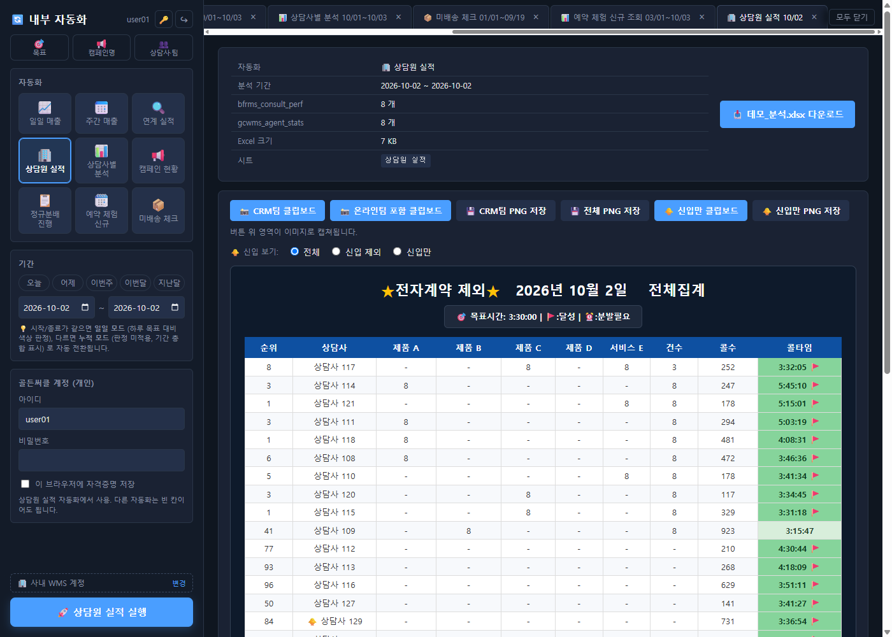
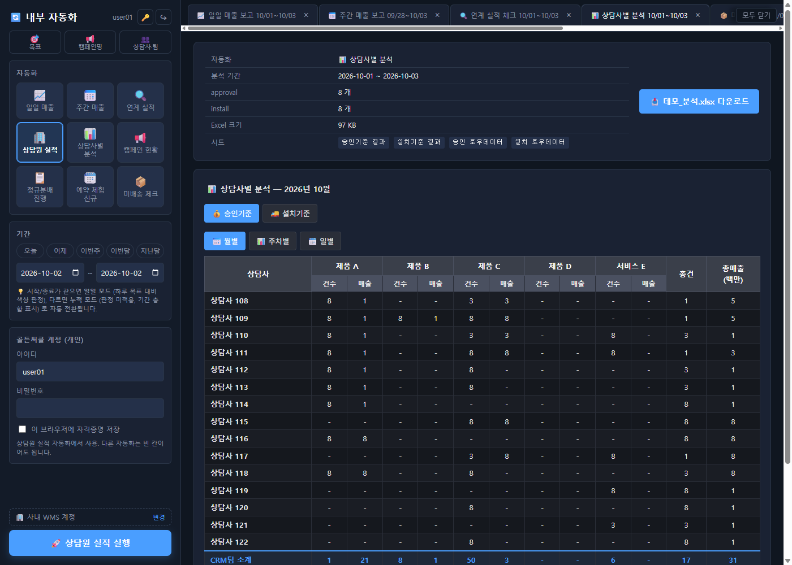

01
CRM 분석 자동화 워크스페이스 — RIA 사이트를 정복하다
표준 웹 자동화가 통하지 않는 바디프랜드 CRM(Nexacro RIA)을 Playwright로 정복해, 조회→분석→리포트를 클릭 한 번으로 끝냅니다. 데스크톱(PyQt6)에서 팀 공용 웹(FastAPI·Docker)까지 확장.
업무
기존
개선
단축
일일 매출 보고
수시간
약 2분
~98%
주간 매출 보고
반나절
약 2분
~99%
연계 실적 체크
30분+
약 2분 30초
~92%
예약 체험 신규 조회
30분~1시간
약 2분
~96%
미배송 체크
30분~1시간
약 2분
~96%
상담원 실적
30분~1시간
약 2분
~96%







⚠️ 데모 데이터 — 사내 시스템 보호를 위해 회사명·제품명·상담사 이름·실 영업 수치는 모두 마스킹.
펼쳐서 — 기능 · 방법 · 운영
- RIA 자동화 엔진 — 셀렉터·클릭·그리드·콤보 단위로 정복
- 5종 자동화 리포트 — 일일·주간 매출, 연계 실적, 예약·체험·신규, 미배송
- 다차원 분석 → Excel·대시보드 자동 생성 — 보고 양식 그대로
- 데스크톱(PyQt6) → 팀 공용 웹앱(FastAPI·Docker) 확장 배포
- 자체 인증(bcrypt) · Redis 잡 영속 · 실시간 진행(SSE) · 동시접속 분산 락
- 월별·제품별·온라인 매출목표 CRUD · 미배송 건 다차원 가시화
Method
RIA(Nexacro)는 일반 DOM 셀렉터가 안 통합니다. DOM 덤프로 구조를 역분석해 그리드·콤보 단위 자동화 방법론을 직접 정립했습니다.
Access
실제 운영 중인 사내 업무 툴이라 폐쇄망 + Tailscale로 외부 노출 없이 운영. 공용 계정 동시 운영은 분산 락으로 안전 확보.